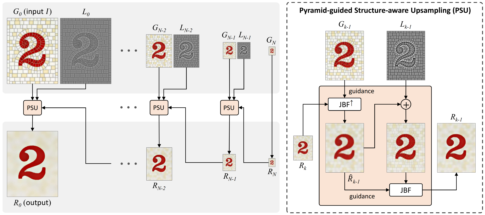

Pyramid Texture Filtering
1Sun Yat-sen University,
2South China University of Technology
 We demonstrate texture filtering (also referred to as structure-preserving filtering) based on Gaussian and Laplacian pyramids, which, unlike previous work, does not rely on any explicit measures to distinguish texture from structure, but can effectively deal with previously challenging large-scale and high-contrast textures. Top: input images with diverse types of textures. Bottom: texture filtered results produced by our method.
We demonstrate texture filtering (also referred to as structure-preserving filtering) based on Gaussian and Laplacian pyramids, which, unlike previous work, does not rely on any explicit measures to distinguish texture from structure, but can effectively deal with previously challenging large-scale and high-contrast textures. Top: input images with diverse types of textures. Bottom: texture filtered results produced by our method.
Abstract
We present a simple but effective technique to smooth out textures while
preserving the prominent image structures. Our method is built upon a
key observation—the coarsest level in a Gaussian pyramid often naturally
eliminates textures and summarizes the main image structures. This inspires
our central idea for texture filtering, which is to progressively upsample
the very low-resolution coarsest Gaussian pyramid level to a full-resolution
texture smoothing result with well-preserved structures, under the guidance
of each fine-scale Gaussian pyramid level and its associated Laplacian pyramid level. We show that our approach is effective to separate structure from
texture of different scales, local contrasts, and forms, without degrading
structures or introducing visual artifacts. We also demonstrate the applicability of our method on various applications including detail enhancement,
image abstraction, HDR tone mapping, inverse halftoning, and LDR image enhancement.
Overview

Overview of our approach. Given an input image \(I\), we first build its Gaussian and Laplacian pyramids {\(G_ℓ\) } and {\(L_ℓ\) }.
Next, we upsample the coarsest Gaussian pyramid level \(G_N\) (\(G_N = R_N\)) to an intermediate texture smoothing image \(R_{N-1}\) at the previous finer scale.
This is achieved by a pyramid-guided structure-aware upsampling (PSU) taking \(G_{N-1}\) and \(L_{N-1}\) as guidance.
The resulting \(R_{N-1}\) is then subjected to the same upsampling process guided by \(G_{N-2}\) and \(L_{N-2}\).
The above upsampling cycle is repeated multiple times until a full-resolution texture smoothing image \(R_0\) is finally obtained. \(JBF\) refers to joint bilateral filtering,
and the symbol \(↑\) in \(JBF^↑\) indicates increase in spatial resolution of the output.